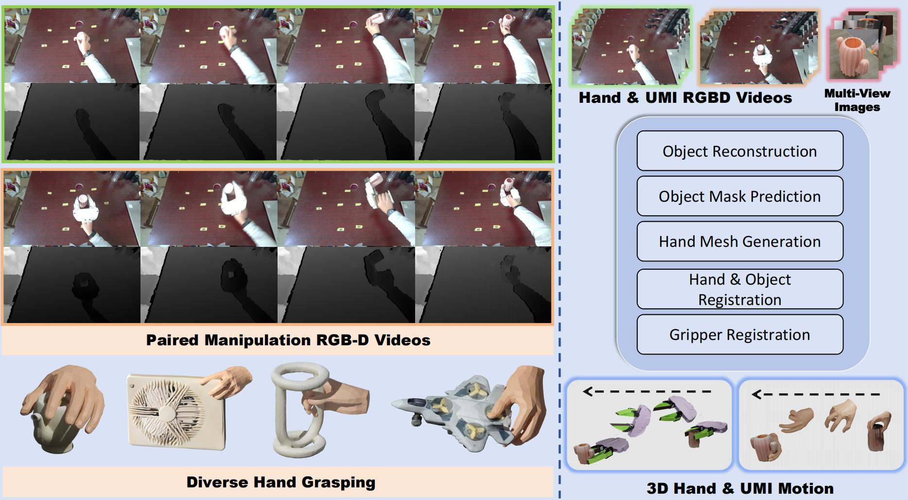
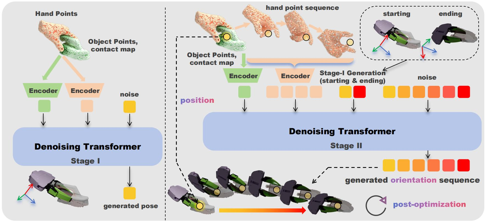

SIGGRAPH Asia 2026
Data-driven Hand-to-Gripper Transfer for Object Manipulation with Complex Spatial Movements
1 SSE, CUHKSZ 2 FNii–Shenzhen 3 GenuX
* Equal contribution § Corresponding author
CosmoH2G transfers complex spatial hand demonstrations to robotic grippers through a two-stage, data-driven framework.
Transferring human hand demonstrations to robotic grippers has recently emerged as a cost-effective solution for robot learning. However, existing methods are largely confined to simple, planar tasks and fail to handle complex spatial movements (eg., intricate trajectories involving rotations or flips) that are essential for robot manipulation. Motivated by this gap, we adopt an implicit, data-driven approach guided by fine-grained hand-pose motions. To this end, we introduce a scalable acquisition pipeline to collect hand-gripper paired demonstrations, governed by a rigorous protocol that prioritizes motion complexity and leverages a handheld gripper for seamless action mimicry. This yields a large-scale paired dataset comprising 6,189 episodes across 1,254 unique objects, exhibiting significantly higher spatial complexity than existing benchmarks. However, learning such complex mappings remains challenging. We observe that naive end-to-end generation of full gripper pose sequences is insufficient, as minor trajectory deviations compound rapidly under intricate dynamics. To address this, we propose a two-stage framework: Stage I predicts sparse gripper keyframes (initial and terminal) to simplify the mapping objective, while Stage II generates the full continuous action sequence conditioned on these keyframes. Furthermore, to mitigate cumulative drift, we keep the gripper's orientation being learned while post-optimizing its translation based on the grasping heuristic and kinematic consistency. In both simulation and real-robot experiments, our framework enables stable and precise hand-to-gripper transfer of complex spatial manipulations, significantly outperforming traditional baselines.

